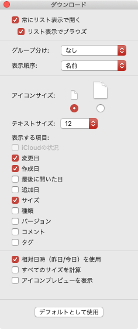

Mac mini(2018)
Table of Contents
1 OS
macOS Mojave バージョン 10.14.6
2 システム環境設定
2.1 一般
- アクセントカラー
- レッド
- レッド
- 強調表示色
- レッド
- レッド
2.2 デスクトップとスクリーンセーバ
2.2.1 デスクトップ
デスクトップピクチャの1つを選択してから以下を実行。
- ピクチャを変更
- チェック
- 5分ごと
- チェック
- ランダムな順序
- チェック
- チェック
2.2.2 スクリーンセーバ
今日の一言を選択- 開始までの時間
- 5分
- 5分
2.3 Dock
- ウインドウをしまうときのエフェクト
- スケールエフェクト
- スケールエフェクト
- ウインドウをアプリケーションアイコンにしまう
- チェック
- チェック
- Dockを自動的に表示/非表示
- チェック
- チェック
- 最近使ったアプリケーションをDockに表示
- アンチェック
- アンチェック
2.4 セキュリティとプライバシー
2.4.1 一般
- スリープとスクリーンセーバの解除にパスワードを要求
- アンチェック
- アンチェック
2.4.2 FileVault
FileVaultを有効にする。
2.5 ディスプレイ
2.5.1 ディスプレイ
- 使用可能な場合はメニューバーにミラーリングオプションを表示
- アンチェック
- アンチェック
2.6 省エネルギー
- ディスプレイをオフにするまでの時間
- 15分
- 15分
- ネットワークアクセスによるスリープ解除
- アンチェック
- アンチェック
- Power Napを有効にする
- アンチェック
- アンチェック
2.7 キーボード
2.7.1 キーボード
- キーのリピート
- 最速に変更
- 最速に変更
- リピート入力認識までの時間
- 最短に変更
- 最短に変更
2.7.1.1 修飾キー
- Caps Lock (⇪) キー
^ Controlに変更
2.7.2 ユーザ辞書
きららざかを削除
2.7.3 ショートカット
- 入力ソース
- 前の入力ソースを選択
- アンチェック
- アンチェック
- 入力メニューの次のソースを選択
^\に変更
- 前の入力ソースを選択
- Spotlight
- Spotlight検索を表示
- アンチェック
- アンチェック
- Finderの検索ウインドウを表示
- アンチェック
- アンチェック
- Spotlight検索を表示
2.7.4 入力ソース
- 下記以外を削除
- U.S.
- ひらがな(Google)
- U.S.
2.8 マウス
- スクロールの方向: ナチュラル
- アンチェック
- アンチェック
- 軌跡の速さ
- 最速に変更
- 最速に変更
- スクロールの速さ
- 適度に調整
- 適度に調整
2.9 サウンド
2.9.1 サウンドエフェクト
- 通知音を選択
Submarineに変更
- 通知音の音量
- 適度に調整
- 適度に調整
- 音量を変更するときにフィードバックを再生
- チェック
- チェック
- 主音量
- 適度に調整
- 適度に調整
- メニューバーに音量を表示
- チェック
- チェック
2.10 iCloud
サインインしてから iCloud Drive のみをチェック。
2.11 ネットワーク
- Wi-Fi
- Wi-Fiをオフにする
- メニューバーにWi-Fiの状況を表示
- アンチェック
- アンチェック
- Wi-Fiをオフにする
2.12 Bluetooth
Bluetoothをオフにする。
- メニューバーにBluetoothを表示
- チェック
- チェック
2.13 共有
- コンピュータ名
- maple
- maple
2.14 日付と時刻
2.14.1 時計
- 秒を表示
- チェック
- チェック
- 日付を表示
- チェック
- チェック
2.15 アクセシビリティ
2.15.1 ディスプレイ
- カーソルのサイズ
- 適度に調整
- 適度に調整
3 アプリケーション
3.1 インストール
3.2 アンインストール
- GarageBand
- iMovie
- Keynote
- Numbers
- Pages
3.3 Dock
以下のアイコンを削除。
- Siri
- メール
- 連絡先
- カレンダー
- メモ
- リマインダー
- マップ
- 写真
- メッセージ
- FaceTime
- iTunes
3.4 Finder
3.4.1 環境設定
3.4.1.1 一般
- 新規Finderウインドウで次を表示
- ホームディレクトリを選択
- ホームディレクトリを選択
3.4.1.2 サイドバー
- サイドバーに表示する項目
- よく使う項目
- 下記のみを選択
- アプリケーション
- デスクトップ
- ダウンロード
- ホームディレクトリ
- アプリケーション
- 下記のみを選択
- iCloud
- iCloud Drive
- アンチェック
- アンチェック
- iCloud Drive
- よく使う項目
3.4.1.3 詳細
- すべてのファイル名拡張子を表示
- チェック
- チェック
- 拡張子を変更する前に警告を表示
- アンチェック
- アンチェック
- フォルダを常に先頭に表示する場所
- 名前順で表示しているウインドウ
- チェック
- チェック
- デスクトップ
- チェック
- チェック
- 名前順で表示しているウインドウ
- 検索実行時
現在のフォルダ内を検索を選択
3.4.2 「表示」メニュー
- パスバーを表示
- ステータスバーを表示
3.4.2.1 表示オプション
- 任意のフォルダで表示オプションを表示(
command+J) 下記の設定に変更

- Finderのタブで表示項目を並べ替える
- 名前
- サイズ
- 作成日
- 変更日
- 名前
デフォルトとして使用をクリック
この設定が適用されないフォルダでは下記を実行。
- 表示オプションを表示(
command+J) optionを押す
デフォルトとして使用がデフォルトに戻すになる。デフォルトに戻すをクリック